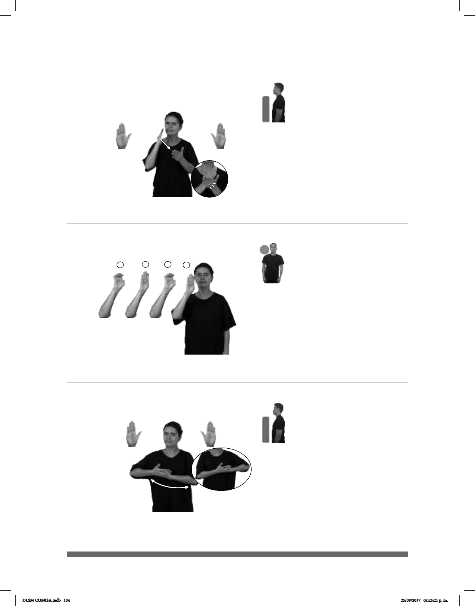

134
(B-P 70)
________________neg_
SEGUIR TRAVIESO pro-TÚ NO-DEBER BASTA
No debes seguir de travieso, ya basta.
Seña: SB
MD y MB B-P.2
MD palma oblicua hacia
la izquierda y hacia adentro. MB palma
oblicua hacia arriba y hacia adentro.
MD y MB a la altura del
pecho.
La MD golpea la MB en
línea recta.
Ceño fruncido,
cabeza adelantada, labios retraídos.
interj. No más, es
1
23
4
(B-P 71)
____muy
dm-CÉSAR pos-SU #BEBÉ BONITO
El bebé de César es muy bonito.
Seña: SM
Seña que pasa de
B-P.1 a E.1 a B-P.1 a E.1
Palma hacia afuera.
A la altura del cuello.
Los dedos se
sust. f. y m. Niño o
niña recién nacido o de corta edad.
Seña: SB
MD y MB B-P.2
MD y MB palmas hacia
arriba.
A la altura del pecho. MD
sobre MB.
MD y MB se mueven
formando un arco de derecha a izquier-
da y de izquierda a derecha.
Simula la acción de
cargar y mecer a un bebé.
sust. f. y m. Niño o niña
recién nacido o de corta edad.
(B-P 72)
TODO-EL-DÍA BEBÉ DORMIR
El bebé duerme todo el día.
DLSM COMISA.indb 134 25/09/2017 02:25:21 p. m.